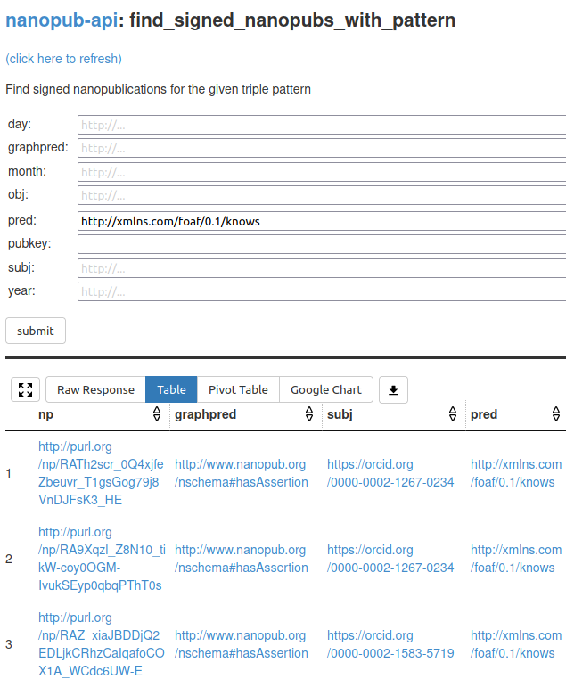

Semantic micro-contributions with decentralized nanopublication services
Tobias Kuhn
VU Amsterdam
http://www.tkuhn.org
WAI Seminar at VU Amsterdam, 7 June 2021
Kuhn T, Taelman R, Emonet V, Antonatos H, Soiland-Reyes S, Dumontier M. 2021. Semantic micro-contributions with decentralized nanopublication services. PeerJ Computer Science 7:e387 https://doi.org/10.7717/peerj-cs.387
Motivation: Easy and Quick Publishing Small Linked Data Contributions
- Contributions that can also be original or personal
- e.g. new scientific findings or opinions
- they don't fit in resources like WikiData
- A bit like a semantic version of Twitter
- But fully decentralized
Nanopublication
Architecture of Approach

Architecture of Approach

Architecture of Approach

Architecture of Approach

Template-Based Publishing with Nanobench

Template-Based Publishing with Nanobench

Templates are Nanopublications too!

Template Template
Usability Study Results
- Task: Install and set up Nanobench and publish nanopublications
- Overall SUS score of 77.76 (above average, between "good" and "excellent")
- → Nanobench makes it easy for users to publish digitally signed contributions
Server Network

grlc-based Services
grlc-based Services
LDF-based Services
LDF-based Services
Query Outcomes in Performance Evaluation